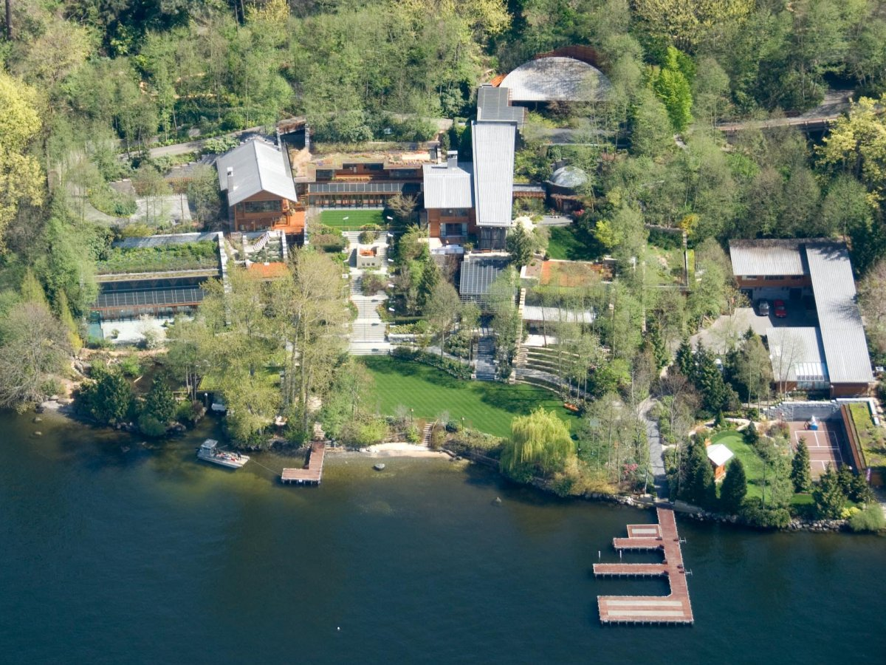
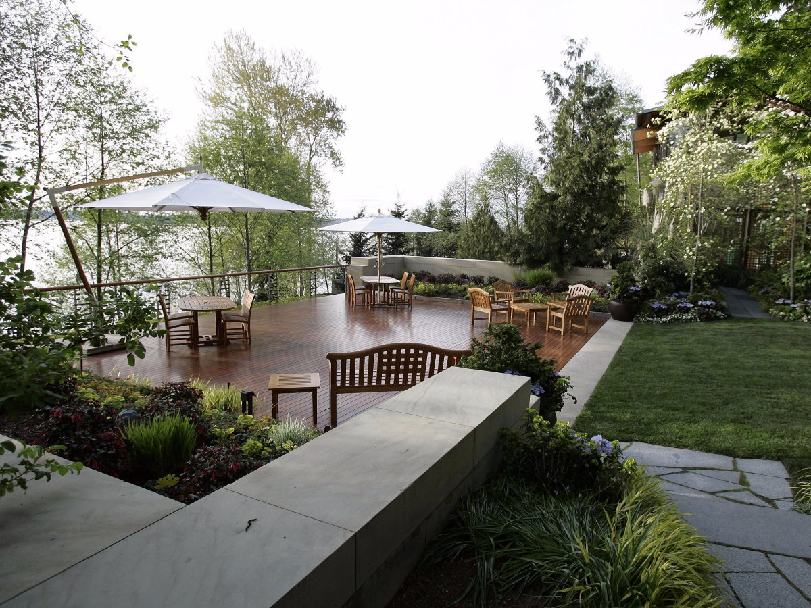
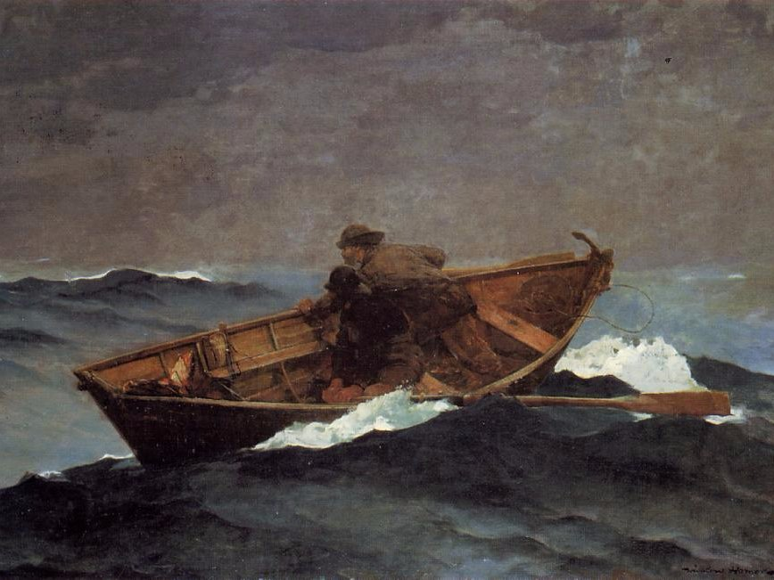
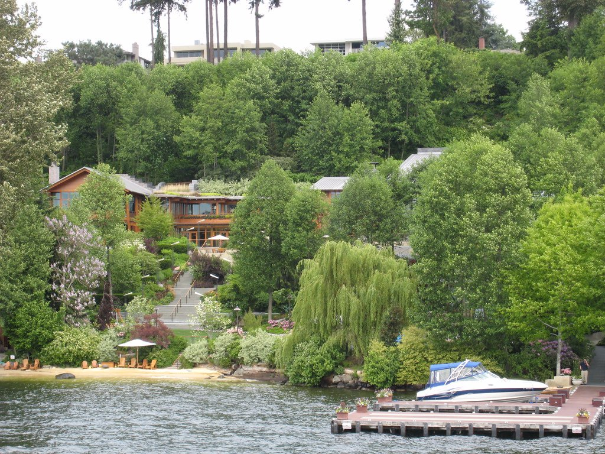
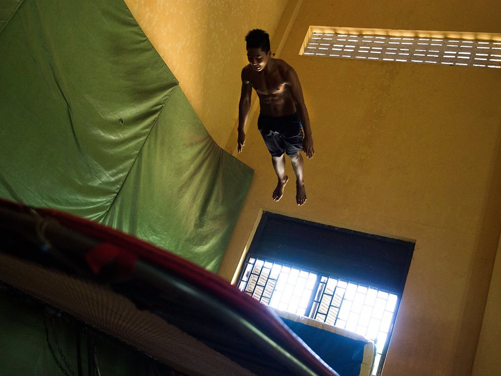
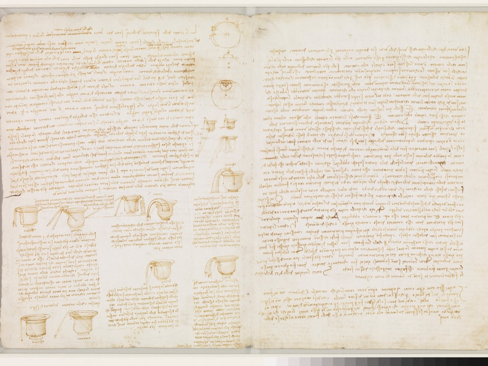
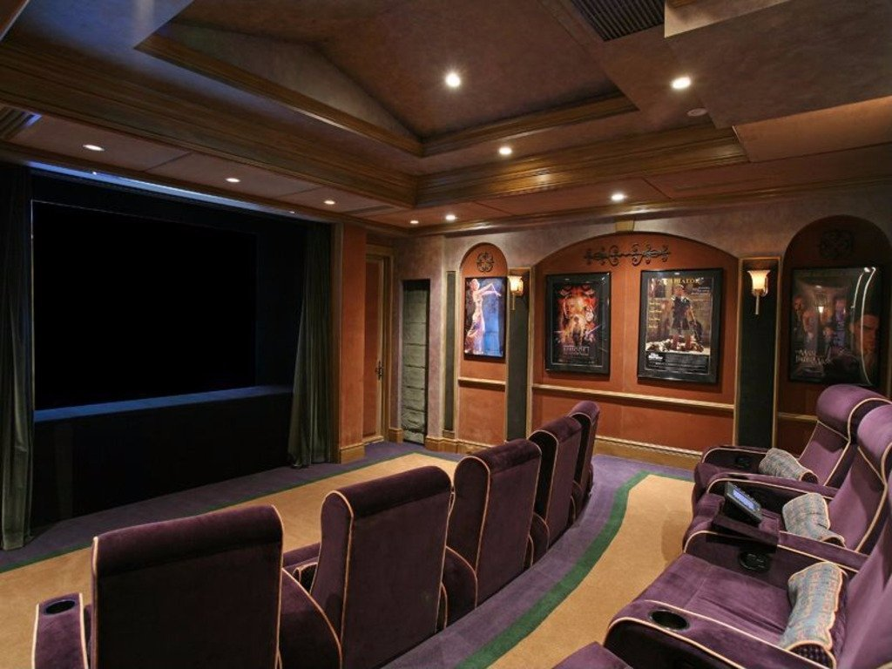
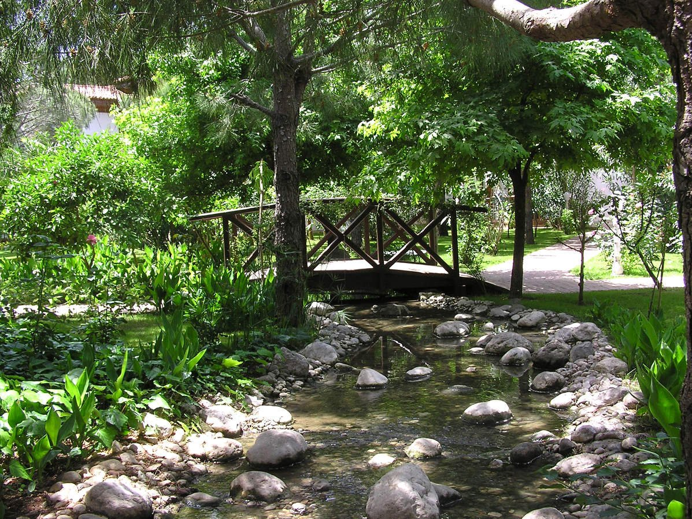
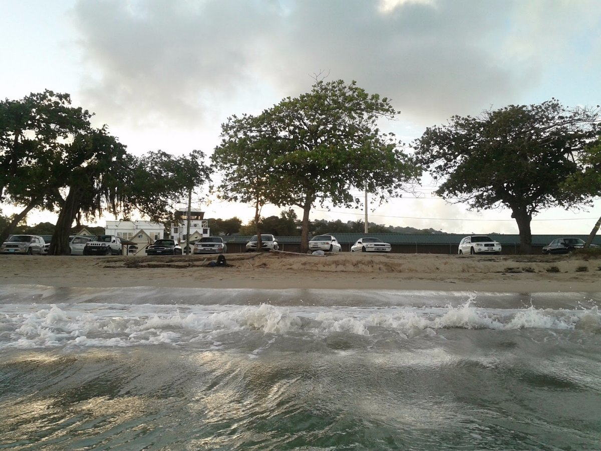

Với giá trị tài sản ước tính khoảng 78,9 Tỉ Đô la Mỹ, Bill Gates - Người sáng lập Microsoft là người giàu nhất nước Mỹ. Ông đã xây cho mình một dinh thự ở Media - Washington và đặt tên nó là Xanadu 2.0 (Tên này là đặt theo nhà của nhân vật Charles Foster Kane trong cuốn sách Citizen Kane. Tổng diện tích của Xanadu 2.0 vào khoảng 6132 mét vuông. Tổng chi phí xây dựng vào khoảng 60 triệu Đô la và phải mất đến 7 năm mới hoàn thành. Mời bạn xem qua một vài tính năng đỉnh của đỉnh của căn nhà trong mơ này nhé. 1. Giá trị ngôi nhà đến nay vào khoảng 123 Triệu Đô la Mỹ  Bill Gates mua khu đất này vào năm 1988 với giá 2 triệu Đô. Sau 28 năm kèm với khoảng đầu tư khổng lồ để xây dựng, giá trị hiện nay của khu nhà là 128 triệu Đô la. Một năm Bill Gates phải trả khoảng 1 triệu Đô tiền thuế bất động sản. 2. Gần 1200 mét khối gỗ quý được dùng để xây nhà.  Khu nhà được dùng gỗ quý, có những cây fir lên đến 500 tuổi(cây linh sam hoặc chỉ một loại cây lá kim, theo 1tudien.com) Tổng số gỗ được dùng là hơn 1200 mét khối gỗ, hơn 300 công nhân xây dựng tham gia công trình, trong đó hơn 100 người là thợ điện. 3. Hệ thống theo dõi khách ở sẽ điều chỉnh máy điều hòa, đèn theo ý khách Khi khách đến chơi nhà, họ được trao một cái khuy áo. Cái huy hiệu này sẽ tương tác với các cảm biến đặt khắp nhà. Khách cài đặt mức ánh sáng, mức nhiệt độ phòng theo ý mình, khi khách đi đến bất kì đâu trong nhà, nhiệt độ môi trường và ánh sáng sẽ tự được thay đổi theo tùy chỉnh lúc đầu. Ngoài ra trong tường còn có rất nhiều loa chôn ngầm, giúp âm nhạc cũng theo bước chân khách từ phòng này sang phòng khác. 4. Khu nhà tận dụng môi trường xung quanh để điều hòa nhiệt độ Xanadu 2.0 được xây dựng theo phương pháp "ẩn mình vào môi trường", nó tận dụng môi trường xung quanh giúp điều hòa nhiệt độ, giúp mùa đông thêm ấm áp và mùa hè thì luôn mát mẻ 5. Chỉ cần chạm tay là có thể thay đổi tranh ảnh trên tường  Hệ thống màn hình giá 80 ngàn Đô la được gắn khắp khu nhà, khách ở dễ dàng thay đổi tranh ảnh theo chủ đề mình thích. Cơ sở dữ liệu tranh ảnh được lưu trữ trên hện thống máy tính có giá 150 ngàn Đô la 6. Hồ bơi có hệ thống loa ngầm dưới nước  Hồ bơi dài 18 mét có hẳn một tòa nhà riêng diện tích gần 1,2Km vuông. (Cái nhà màu nâu ở hình trên) Hồ bơi có hệ thống loa ngầm phát nhạc dưới nước, hồ bơi có đường ống ngầm nối ra vùng nước tự nhiên, nếu muốn, Bill Gate có thể bơi trong hồ sau đó lặn ra ngoài bơi tự nhiên luôn. 7. Khu nhà thể dục rộng 760 mét vuông  Khu nhà có phòng tập thể dục rộng 760 mét vuông, có nhà xông hơi, xông khô, khu để đồ cho nam nữ riêng, có trần cao 7 mét để chơi lò xo nhún. 8. Khu sảnh siêu rộng có thể chứa 200 khách ăn tối Khu sảnh 700 mét vuông có thể chứa 150 khách ăn tiệc ngồi hoặc 200 khách dùng tiệc đứng buffet. Ở đây có một lò sưởi gỗ rộng 1,8mét và một màn hình video rộng 6,2 mét 9. Khu nhà có tổng cộng 24 nhà tắm Có tổng cộng 24 nhà tắm trên khắp khu nhà, trong có 10 nhà tắm với đầy đủ hệ thống bồn tắm mát xa tiêu chuẩn 5 sao. 10. Có 6 nhà bếp với trang bị chuẩn khách sạn 5 sao Khắp khu nhà là 6 nhà bếp trang bị đầy đủ, tiêu chuẩn khách sạn 5 sao, sẵn sàng phục vụ mọi tình huống Bill Gate đặt ra. 11. Thư viện siêu rộng, nhiều sách quý hiếm, có cuốn giá 30 triệu Đô la  Thư viện rộng hơn 600 mét vuông có mái trần vòm cung. Ngoài các tủ sách thông thường thì Bill Gate còn có 2 tủ sách bí mật và một quầy bar bí mật giấu sau lưng tường. Trên trần nhà có vẽ câu trích từ cuốn The Great Gatsby: "He had come a long way to this blue lawn, and his dream must have seemed so close that he could hardly fail to grasp it." Thư viện cá nhân này cũng là nơi Bill Gate cất giữ tài liệu Codex Leicester của Leonardo da Vinci, tài liệu này được ông mua vào năm 1994 với giá 30.8 Triệu Đô la. 12. Phòng chiếu phim siêu sang 20 ghế  Phòng chiếu phim 20 chỗ được thiết kế để tăng tối đa sự thoải mái khi xem phim, với ghế bành rộng, máy làm popcorn, màn hình lớn và hệ thống âm thanh tối tân. 13. Nhà ở của khách cũng hiện đại như nhà của chủ Bill Gate có xây một nhà khách rộng gần 600 mét vuông với các phòng ngủ, phòng tắm đầy đủ tiện nghi. Đây cũng là khu nhà được xây dựng đầu tiên, nó là nơi Bill Gate gắn thử nghiệm các hệ thống hỗ trợ nhà thông minh và dùng thử trước khi xây dựng nhà chính. Sau khi xây nhà chính xong thì khu nhà này để cho khách ở 14. Khu nhà có 1 ga ra để xe ngầm Khắp khu nhà là các ga ra để xe sắp xếp thuận tiện với việc sử dụng, nếu đậu thoải mái thì có thể chưa 23 chiếc xe, trong số ga ra này thì có một cái được xây ngầm dưới đất bằng bê tông, gara ngầm này có thể chứa 10 chiếc xe. Bill Gates thích nhất là Porsche, ông có 911 Carrera, 930, 959 coupe (xe siêu hiếm) Hy vọng có lúc mình hoặc anh em nào đó sẽ viết về các siêu xe của Bill Gates. 15. Bill Gates thích cây nào trong vườn thì sẽ cho máy tính nuôi cây đó Bill Gates thích trồng cây, ông đang thích một cây phong khoảng 40 tuổi nằm trong sân nhà. Cây phong này được máy tính theo dõi và chăm sóc, nếu máy thấy cây bị khô nước thì sẽ tự động bơm nước tưới, tất nhiên máy sẽ lưu trữ lại các số liệu sức khỏe và tăng trưởng của cây cho Bill Gate xem. 16. Nhà có suối nhân tạo, nuôi đầy cá ngon  Do nhà có xây nhiều tường cao, để tránh việc đất sụt, có suối nhân tạo và vài vùng đầm lầy nhân tạo được tạo ra rải rác trong khu nhà, ở dòng suối, có cá hồi salmon và cá trout. 17. Bill Gate nhập cát từ Caribbean làm bãi biển  Bãi biển trước nhà Bill Gate được đổ đầy cát nhập từ St. Lucia - Caribbean, cát này được đổ thêm mỗi năm bằng các xà lan lớn. 18. Muốn thăm nhà, phải đăng ký và trả nhiều tiền Bill Gate từng bán vé tham quan khu nhà Xanadu 2.0 với giá 35 ngàn Đô la, số tiền này được ông dùng vào mục đích từ thiện. Tuy nhiên không phải lúc nào Bill Gates cũng sẵn sàng cho khách vào thăm mà chỉ thường vào các dịp đặc biệt nào đó. Theo TechInsider Một số điều ít người biết về dinh thự giá 123 Triệu USD của tỉ phú Bill Gate | Tinhte.vn